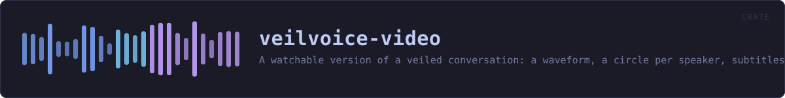

veilvoice-video
A watchable version of a veiled conversation: a waveform, a circle per speaker, subtitles, and an honest account of what needs ffmpeg.
reference · the same page on GitHub
A watchable version of a veiled conversation: the waveform, a circle per speaker, the title, the subtitles, and a background.
What this produces, and what needs something else
A self-contained page, always. page::player writes one HTML file that plays the veiled audio, draws its waveform, lights each speaker's circle as they talk and shows the subtitles. It needs nothing installed, it contacts nothing, it opens in any browser on any device, and it is what this crate is for.
A video file, only if ffmpeg is there. Turning a few thousand frames into an .mp4 needs a codec, and this project ships none: writing an H.264 encoder is not a sensible thing for a voice de-identifier to do, and pulling one in would put a large C dependency into a graph whose emptiness is a front-page claim. So ffmpeg finds the tool if the machine has it and prepares the exact command; if the machine does not, the page is still there and nothing has failed.
VeilVoice never downloads or runs ffmpeg on your behalf, exactly as it never installs any other companion.
The page needs a little JavaScript, and says so
Lighting the right circle means knowing where the audio has got to, and only the audio element knows that. There is a small inline script — no file, no network, no library — and a <noscript> that says what it does. Without it the audio still plays, the subtitles still appear and the waveform is still drawn; the circles simply do not light up.
A picture is not veiled
A speaker may have a portrait, and it is drawn exactly as supplied. Nothing here anonymises an image: a photograph of somebody's face beside their veiled voice identifies them completely. The default is a plain filled circle for that reason, and SCOPE says it where a user will read it.
In plain words
This draws the picture.
A waveform, a circle for each person in their own colour with their name under it, a title, and a page that plays all of it together in a browser and needs nothing installed.
It does not make a video file. That needs an encoder, and this project ships none -- so it prints the command that would do it with ffmpeg, if you have ffmpeg, and leaves running it to you.
HOW THE CRATE FITS TOGETHER
Every arrow is a crate:: or super:: path one module actually uses, read out of the source rather than drawn by hand.
The same graph as Mermaid source
%%{init: {"theme":"base","themeVariables":{"background":"#1a1b26","primaryColor":"#1f2335","primaryTextColor":"#c0caf5","primaryBorderColor":"#7aa2f7","secondaryColor":"#16161e","tertiaryColor":"#16161e","lineColor":"#737aa2","textColor":"#c0caf5","mainBkg":"#1f2335","nodeBorder":"#7aa2f7","clusterBkg":"#16161e","clusterBorder":"#2f3549","fontFamily":"ui-monospace, SFMono-Regular, Consolas, monospace","fontSize":"14px"}}}%%
flowchart TD
n_lib(["lib.rs<br/>140 lines"])
n_ffmpeg["ffmpeg.rs<br/>316 lines"]
n_page["page.rs<br/>1029 lines"]
n_palette["palette.rs<br/>747 lines"]
n_waveform["waveform.rs<br/>259 lines"]
n_page --> n_palette
n_page --> n_waveform
click n_lib href "https://github.com/tilas01/veilvoice/blob/main/crates/veilvoice-video/src/lib.rs" "open the source"
click n_ffmpeg href "https://github.com/tilas01/veilvoice/blob/main/crates/veilvoice-video/src/ffmpeg.rs" "open the source"
click n_page href "https://github.com/tilas01/veilvoice/blob/main/crates/veilvoice-video/src/page.rs" "open the source"
click n_palette href "https://github.com/tilas01/veilvoice/blob/main/crates/veilvoice-video/src/palette.rs" "open the source"
click n_waveform href "https://github.com/tilas01/veilvoice/blob/main/crates/veilvoice-video/src/waveform.rs" "open the source"This site loads no third-party script, so it cannot run Mermaid; the diagram above is the same nodes and edges drawn by the generator instead. GitHub renders the source below directly.
THE FILES
| File | Lines | What it is |
|---|---|---|
ffmpeg.rs | 316 | The video file, which needs a codec this project does not ship. |
lib.rs | 140 | A watchable version of a veiled conversation: the waveform, a circle per speaker, the title, the subtitles, and a background. |
page.rs | 1029 | The picture: one still for a preview, and one page that plays. |
palette.rs | 747 | Colours: the site's own tokens, and one per speaker. |
waveform.rs | 259 | The shape of the audio, reduced to something a page can draw. |